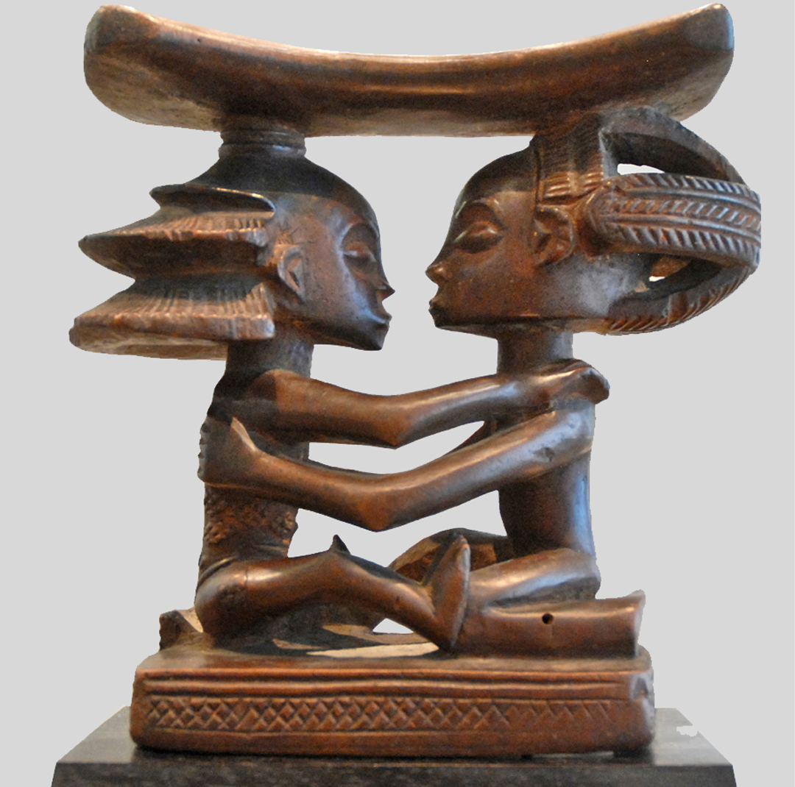
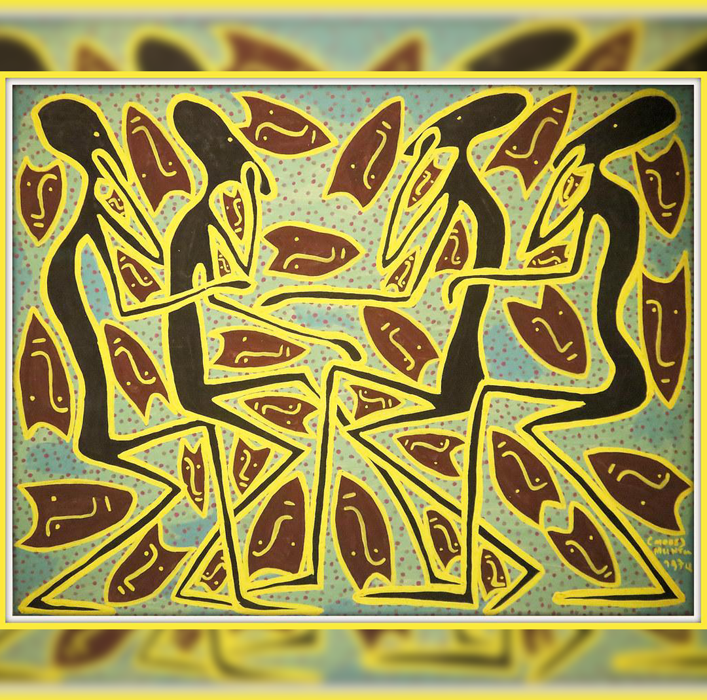
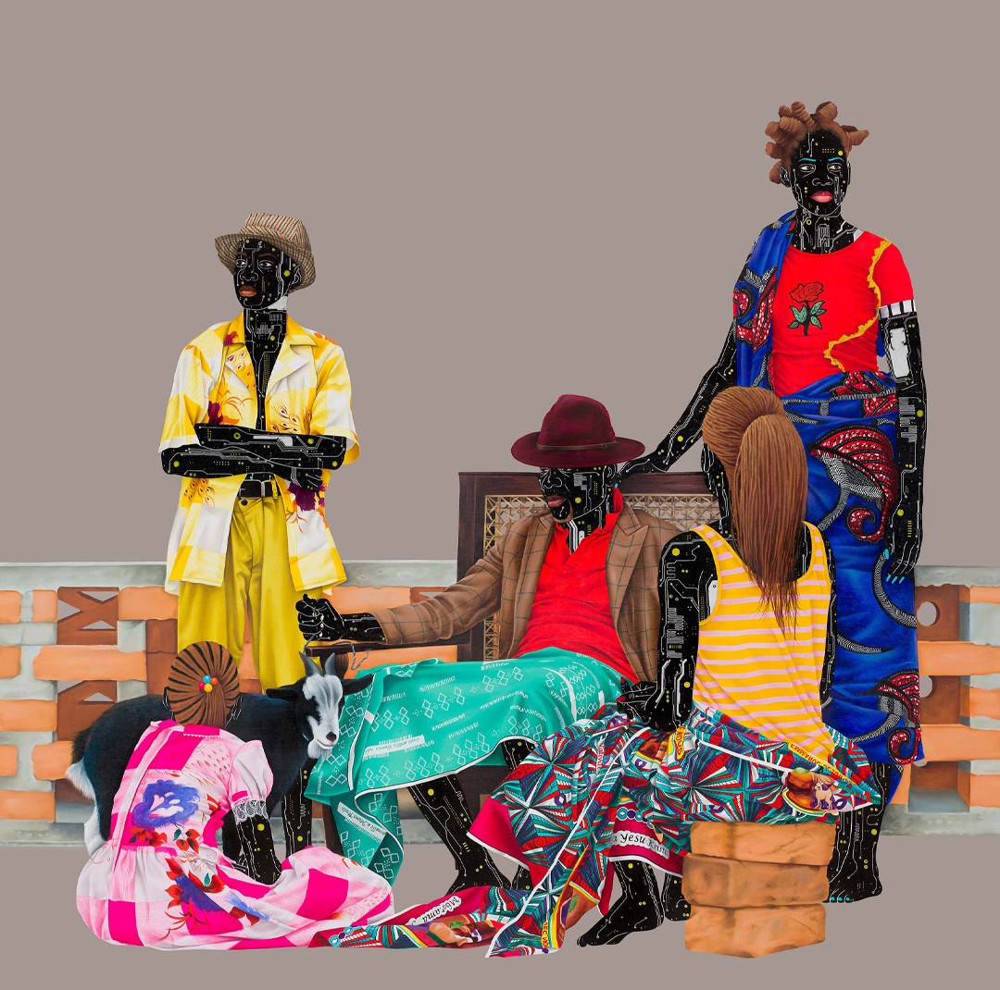

Art from the Democratic Republic of Congo
The Democratic Republic of the Congo also boasts a rich artistic heritage, encompassing traditional art, sculpture, and modern interpretations. We’ll be featuring a selection of pieces that express this diversity in art.
Luba Art (Headrest; 19th Century)

This wooden sculpture is a striking representation of traditional Luba artistry, highlighting not only the intricate hairstyles characteristic of Luba culture but also distinctive body features such as elongated limbs and cylindrical torsos. Luba art predominantly features female figures, often depicted holding significant objects like headrests, spears, axes, and bowls.
These representations go beyond mere aesthetics; they embody core values of Luba society. Females symbolize respect, nurturing, and strength, reflecting the cultural belief that women play a vital role in community and family life. In Luba culture, women are held in high regard, as lineage and descent are traced through the female line.
Mode Muntu (Lubumbashi, 1940 – Lubumbashi, 1985)

Mode Muntu's artwork, Les Esprits Nous Parlent, embodies the influence of his elders, showcasing the rich cultural heritage that informs his creative vision. Renowned for his ability to bridge modern and contemporary art, Muntu employs vibrant colors and traditional silhouette techniques that are hallmarks of his style. This particular piece is a striking example of how he harmonizes traditional themes with a modern aesthetic. According to MutualArt, Muntu's works have garnered impressive auction prices, ranging from $1,906 to $67,419, reflecting the growing appreciation for his unique artistic voice.
Eddy Kamuanga Ilunga (Contrecarrer 1897, 2021)

Eddy Kamuanga Ilunga is one of many new artists forging his way in the Congolese art scene. He studied painting at the Académie des Beaux-Arts in Kinshasa but dropped out to form the art group M’Pongo, where young artists can exhibit together and start their own scene. Eddy's work is fueled by a sense that the people in the DRC are rejecting their heritage in favor of a more globalized mindset. His artwork reflects the loss of traditional culture, as seen in the expressions on the faces of his figurines.